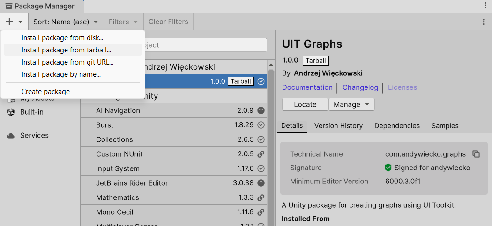
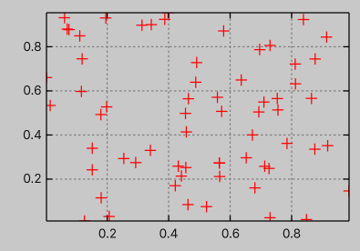
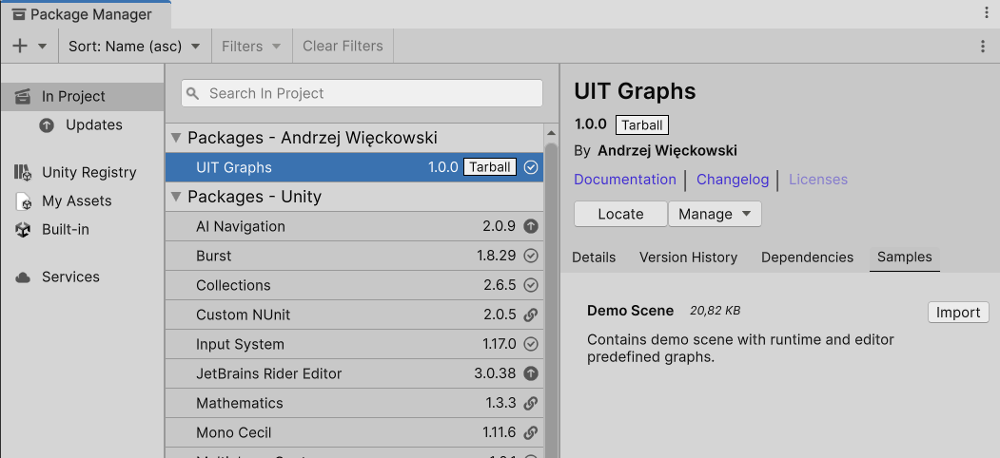
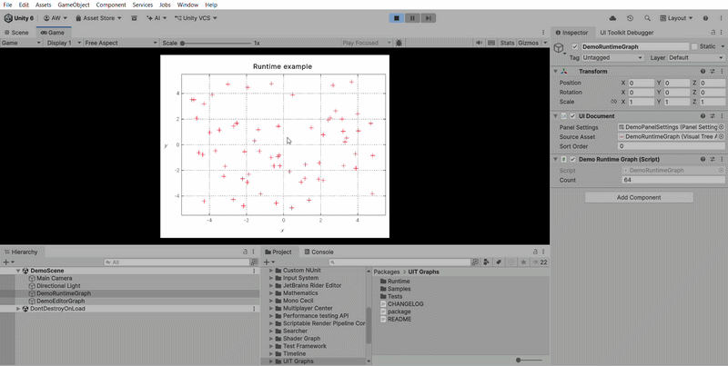

Getting started
Installation
Since this is a closed-source project, pre-built packages are not provided, and the package is not published via UPM for easy updates. However, this may be introduced in the future for convenience. For now, you can install the package via a tarball or by manually copying the files.
Open the Package Manager via Window > Package Manager.
Click the + button and select Install package from tarball... to install the package.

Quick start
The core class provided by this package is Graph, which exposes methods for drawing and style customization.
You can learn more about it in the Tutorial section.
Below, we create an array of random float2 points and plot them using the default settings.
Finally, we attach the Graph to a root VisualElement (for example, from a UI Document or a custom editor/inspector UI).
var random = new Unity.Mathematics.Random(seed: 42);
var data = new float2[64];
foreach (ref var i in data.AsSpan()) i = random.NextFloat2();
var graph = new Graph();
graph.PlotWithPoints(data);
root.Add(graph);

Demo scene
The package also includes a demo scene located in the Samples~/ folder.
You can manually copy these files into your Assets/ folder to explore a fully working example.
Alternatively, you can open the Package Manager and import the demo using the Import button.

In the demo scene, aside from the basic GameObjects such as the camera and light, you will find two components with attached demo scripts for editor and runtime graphs, respectively.
When you enter Play Mode, the result should be similar to the animation below:
